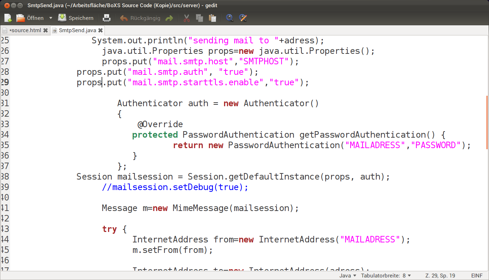
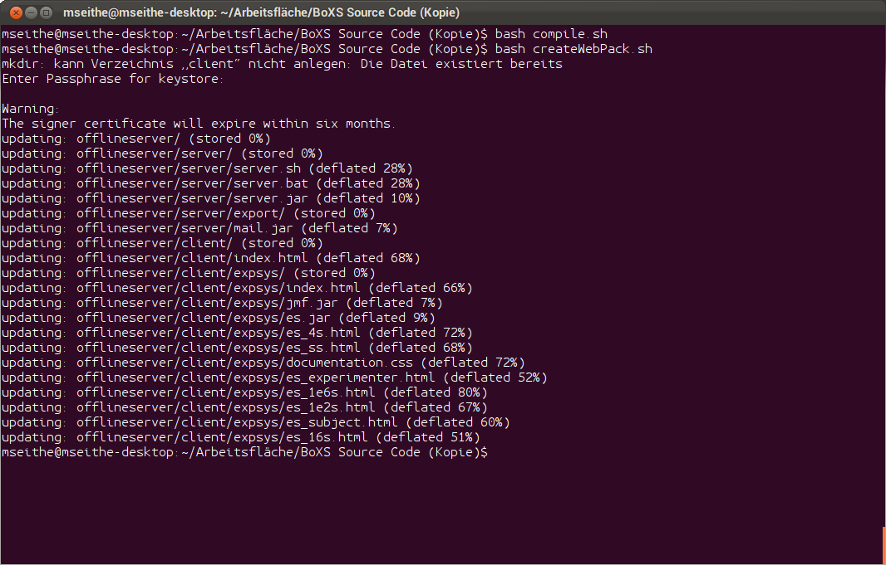
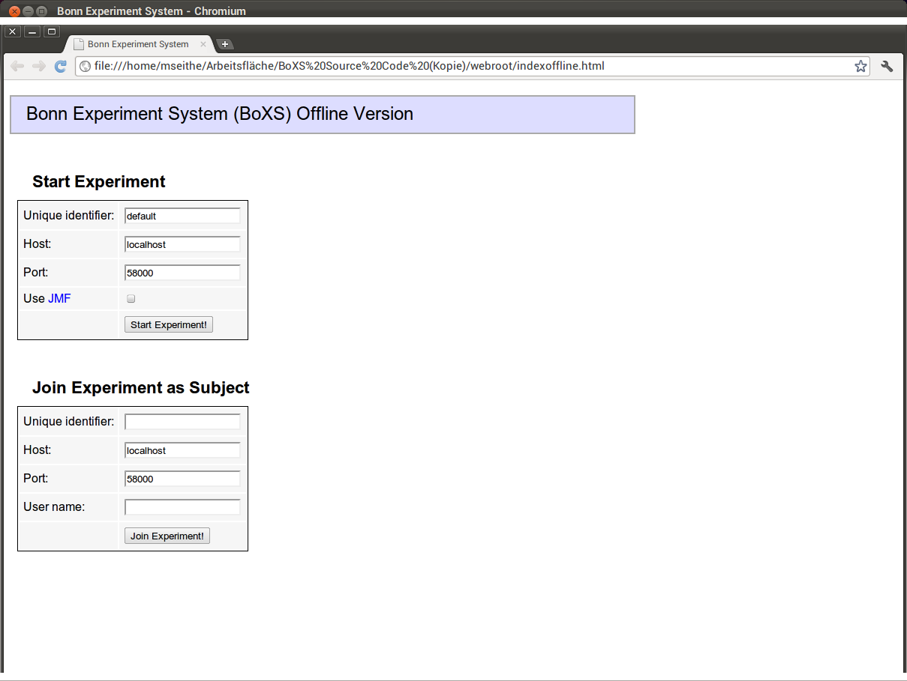

Bonn Experiment System (BoXS) Source Code Access
License
The Bonn Experiment System is hereby released as open source under the GNU Public License (GPL). More information on the GPL can be found here. Basically, you are free to download the original source code, expand and modify it to your contempt as long as you mention me as the original author and do not charge money for the use of the software. Please only proceed if you agree with these conditions.
General information
I release the source code as open source as I cannot ensure that I will always be able to properly support and maintain the BoXS in the future. Releasing it as open source allows you to adapt the BoXS to your specific demands and implement new functions, which are required for your experiments. If you implement bug fixes and/or new features, please do send them to me so I can include them in the official version so that others can profit from them too.
The source code itself is not always richly documented. The general structure is decribed in the official paper on the BoXS, which is available on the homepage. If you encounter problems, please feel free to mail me.
Download
Please only download the source code if you are in agreement with the GPL license.
You can download the complete archive here.
How to compile the BoXS
The following instructions describe how to compile the BoXS on a Linux system. Of course you can also compile it under Windows. In this case, you need to slightly adjust the shell scripts, which is relatively easy.
1. The files

The archive contains four folders and a few shell scripts. The folder named 'src' contains the actual source code of the BoXS. The folder 'webroot' contains the BoXS web site as well as the pages required to run the BoXS. The folder 'lib' provides required libraries for the compilation process and the folder 'pstables' contains precalculated tables for the perfect stranger matching.
2. Filling in an email account (optional)
In order to send emails from your future BoXS server, you need to enter your email account information. If you do not do this, you can still run the BoXS but will not be able to send emails from it. In order to enter your email account open the file "src/server/SmtpSend.java". In this file, enter the actual values for SMTPHOST, MAILADRESS and PASSWORD.

3. Creating a keyfile
Open a terminal and go to the directory in which you have extracted the downloaded archive.

In order for the applets to work properly, you need to create and sign a keyfile. You can do this by executing the corresponding script file ("bash createKey.sh"). This will prompt you for a custom password to your key file (in order to prevent security problems for you future subjects, please do make sure that it is a good and sufficiently complex password!). You also need to enter information about you and your organisational unit. This information is later displayed when a subject opens the BoXS applet for the first time ("Do you trust content from ...") or when the certificate expires (usually after 6 months). When you are done, a keyfile should have been created.
This keyfile is self-certified, which basically means that the user has to trust the person signing the keyfile (you). If you want to make the applet seem more trustworthy to the user, you can let it be certified by 'higher authority', for example by your university/institution. For more information about this, please contact your IT department, which can sign the keyfile with your university's official key.

4. Compiling the BoXS
Note: In order for compiling to work, you need to have the Java Standard Development Kit (SDK) installed, which can be downloaded for free from the Java website if you are running Windows or can be installed from the standard repositories if you are using Linux. I strongly advise using the official Sun Java compiler as I encountered several issues with alternative compilers like Iced Tea.
In order to compile the BoXS, first execute the compile shell script (bash compile.sh), which compiles the Java source files into bytecode.
If this is complete, execute the shell script named createWebPack (bash createWebPack.sh), which will bundle everything and create the actual applet.

How to deploy
If everything worked so far, you are now ready to deploy the BoXS. To do this, you need to have a computer which will serve the BoXS web site and serve as the BoXS server.
1. Set up the web server
You can use any Windows or Linux computer as the web server. You can also use existing web space as provided by your university/institution or a private web hoster.
In order to set up the BoXS web site, simply copy everything which is contained in the folder named webroot onto the web root folder of the server and ensure in the server configuration that it can be accessed publicly. Test this by opening the web site via the web server using a web browser.
2. Set up the BoXS server
The BoXS server handles the communication between the clients and the experimenters. It can be set up on any computer which can be accessed from both experimenter and client computers. It is important that the firewall of this computer is configured to allow TCP traffic on the ports 58000-59000. In order to start the server, execute the shell script called officialserver (bash officialserver.sh).

(The warning/error message occurs if no mail account has been specified)
3. Testing it
Open the indexoffline.html page. Enter the adress of the server under Host and click on start experiment. If everything worked properly, you should now be able to use your own BoXS server.

How to change it
There are several ways in which you can change the behaviour of the BoXS and enhance its functionality:
- In order to change the visual appearance and functionality of the web site, have a look at the webroot folder. All the HTML files included therein can be easily customised. You can also use this to make your own BoXS server the default for your clients.
- If you want to enhance the functionality of the BoXSPL, have a look at the files under 'src/interpreter', especially the 'LexerParser.java', which specifies how each command is handled and executed.
- If you want to create new GUI elements, have a look at the files in 'src/client', especially the 'ClientApplet.java', which specifies how everything is displayed on the client computers.
Usually a new function will require changes in both the interpreter as well as the client applet. In order to approach the creation of a new function I recommend searching for and studying an existing function, which works in a similar way as the desired new function.
Finally
I hope the BoXS source code will be of use to you and will allow you to adapt the BoXS to your preferences. If you manage to find a bug or create a useful new function, please let me know so that I can implement it in the official version and other experimenters can profit from it as well.
Have fun! :)